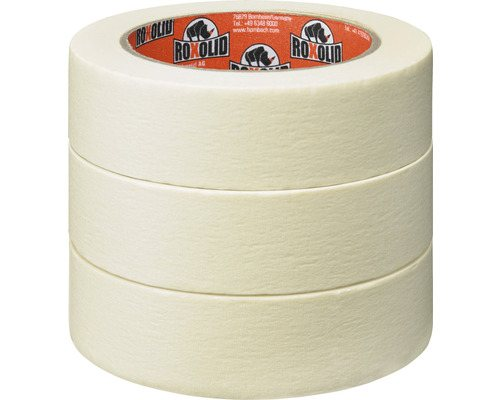
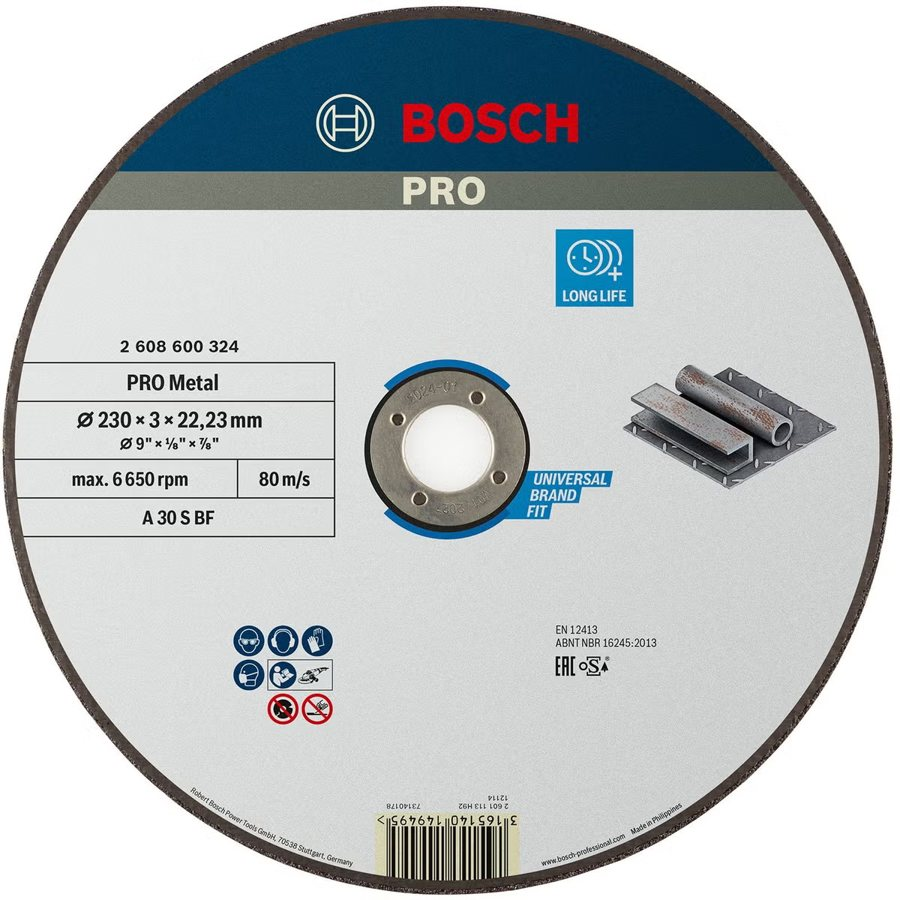
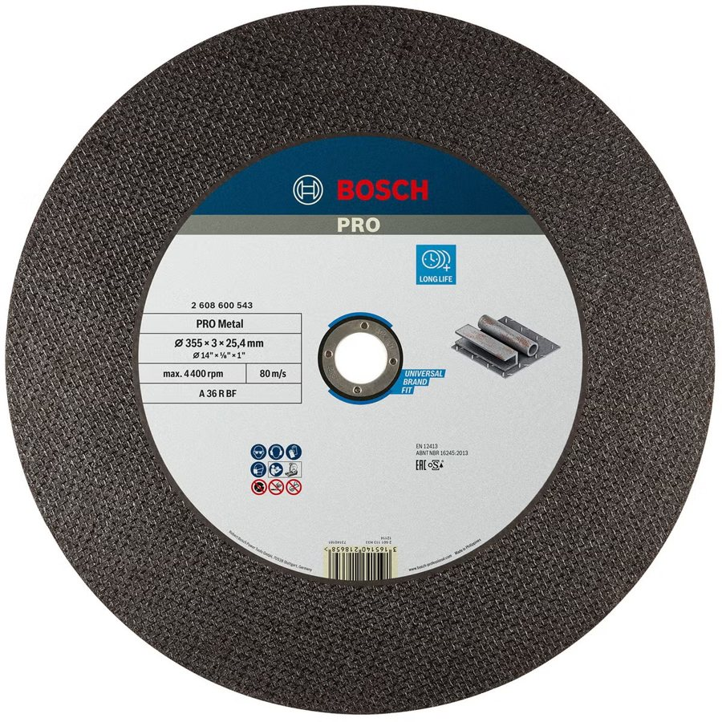
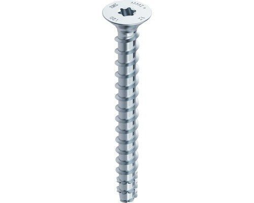
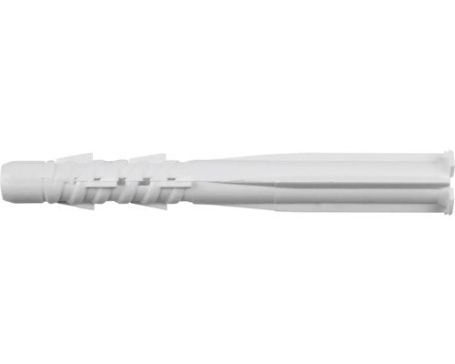
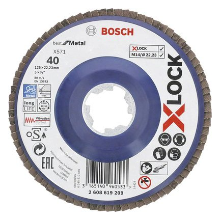
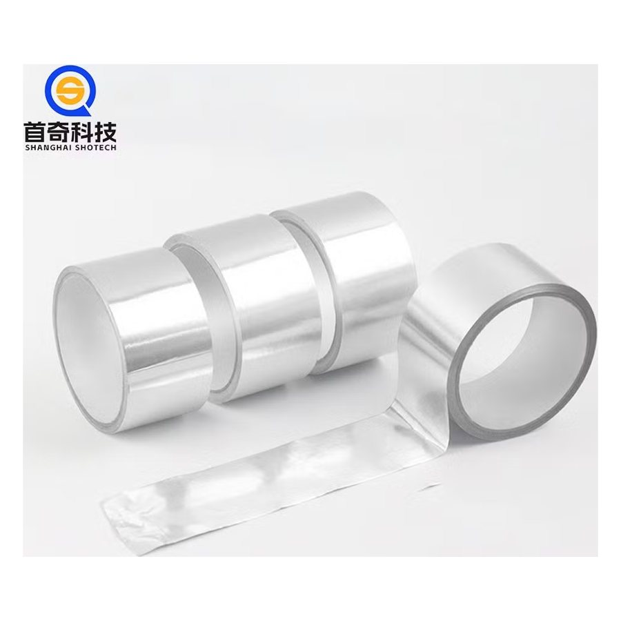
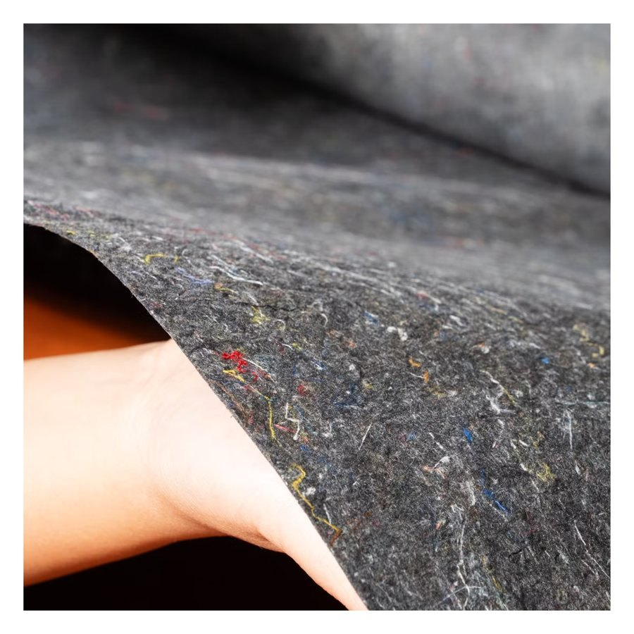
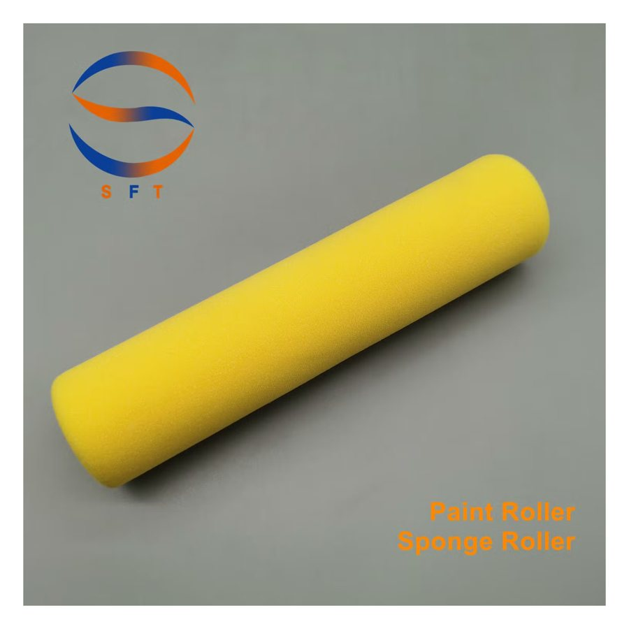

Home / Consumables / Pallet stretch film 500 mm x 300 m, 20 µ

Illustration similar – shows the product type.
Consumables
Pallet stretch film 500 mm x 300 m, 20 µ
LLDPE hand stretch film for pallet wrapping.
Clear 20 µ LLDPE film for hand and shipping wrapping. High stretch, self-clinging. Roll with core; state size and weight.
Technical data
| Customs tariff number (HS) | 39201028 |
|---|
EU standards and regulations
GPSR (EU) 2023/988Product safety, EU responsible personVerpackG / LUCIDPackaging registration
More products in this category

Cloth duct tape 50 mm x 50 mTear-resistant, water-repellent cloth tape for fixing, sealing and bundling on site.

Masking tape 30 mm x 50 m (crepe paper, natural-rubber adhesive)General-purpose crepe tape for sharp paint lines and for fixing masking film during interior painting and filling work.

Utility knife 18 mm with snap-off blade (metal body, auto-lock)Robust utility knife with 18 mm snap-off blade for sheeting, insulation, floor covering and cardboard.

Snap-off blades 18 mm, pack of 10 (SK5 steel, for utility knives)Sharp 18 mm spare blades with snap-off segments: snap off, keep cutting, no blade change.

Marking spray paint 500 ml (construction marking, inverted, fluorescent)Inverted-spray fluorescent marking paint for marking cut, drill and service lines on mineral substrates.

Cutting disc INOX 125 x 1.0 x 22.2 mm (metal/stainless)Extra-thin, low-iron bonded cutting disc for clean, low-burr cuts in steel and stainless steel.

Cutting disc large 230 x 3.0 x 22.2 mm (metal/steel, angle grinder)Robust cutting disc for 230 mm angle grinders to cut steel sections, pipes and reinforcement.

Cutting disc 350 mm for chop saws (3.0 x 25.4 mm, steel)Large cutting disc for chop saws to cut steel sections, pipes and round bar to length quickly.

Chipboard screws 5 x 50 mm, Torx, yellow zinc platedCountersunk Torx chipboard screw for fast timber and drywall substructures without pre-drilling.

Concrete screws 7.5 x 80 mm, Torx, countersunk head, blue zinc platedThread-cutting countersunk concrete screw for fast fixing of frames, battens and sections in concrete and masonry without plugs.

Coil nails (pneumatic nails) 2.5 x 50 mm, 15°, ring shank, galvanisedWire-collated coil nails for pneumatic coil nailers in formwork, roofing, pallet and timber-frame work.

Nylon frame anchor 10 x 100 mm (with screw)Polyamide frame anchor with screw for fixing profiles, frames and substructures in concrete and masonry.

Nylon wall plug (universal anchor) 10 x 50 mm, polyamideExpanding polyamide universal plug for screws in concrete, solid and perforated brick and hollow materials.

Window cleaning set (squeegee + washer with sleeve, telescopic-pole fitting)Two-part set of rubber squeegee and washer for streak-free glass surfaces during final building cleaning.

Flap disc (abrasive flap wheel) Ø 125 mm, zirconia K60, pack of 10Zirconia flap disc for steel and stainless steel: stock removal, deburring and blending in one pass.

Screwdriver bit set TX/PZ/PH 1/4", S2 steel, 32-pc with magnetic bit holder

Chipboard-screw assortment Torx in storage box, 420-pc (3.0-5.0 mm, yellow zinc) incl. bits420 Torx chipboard screws in common sizes, sorted in a box with matching bits: the grab-and-go choice for assembly and workshop.

SDS-plus masonry drill set for concrete/stone, carbide (4 cutters), 5-pc 5-10 mmFive-piece SDS-plus set with four-cutter carbide bits for concrete, masonry and natural stone from 5 to 10 mm.

Hex head bolts DIN 933 M8 x 40 mm, stainless A2Fully threaded hex bolts in A2-70 stainless steel.

Aluminium foil tape 50 mm x 50 mSelf-adhesive aluminium tape for insulation and ducts.

Painter fleece 270 g/m² 1 x 50 mAbsorbent cover fleece with anti-slip underside.

Microfibre cloth 40 x 40 cm, pack of 10Lint-free microfibre cloths for glass and surfaces.

Paint roller 18 cm, yellow-thread, wall paint18 cm roller for wall and emulsion paints.

Tile spacer crosses 3 mm, 250 pcsPlastic tile crosses for even 3 mm joints.

Cable ties 300 x 4.8 mm, nylon, pack of 100Self-locking nylon cable ties 300 x 4.8 mm.